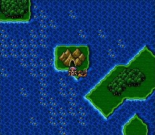
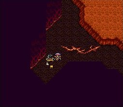
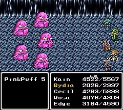
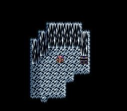
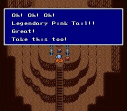
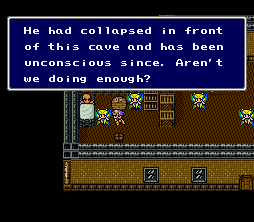
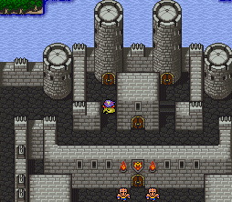
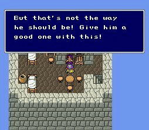
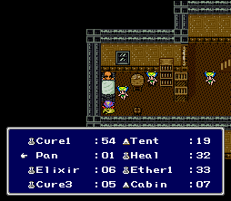
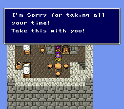

|
Rare
Excalibur
ได้มาโดยการนำ Rat tail (ได้มาจากถ้ำทางไปเมืองสัตว์อสูรในโลกใต้พิภพ)
นำไปให้นักสะสมหาง (Tail Collector) ซึ่งอยู่ทางตอนใต้ของเมือง Fabul
ใกล้กับเมือง Silvera (เมืองที่ผู้คนเป็น หมู กบ คนตัวเล็ก ทั้งหมู่บ้าน)
จะได้ Adamant Ore มา

(เกาะนี้ต้องนั่งเรือ over craft มาเท่านั้น)
นำ Adamant Ore ไปให้ช่างตีเหล็ก ซึ่งอยู่ทางทิศตะวันออกเฉียงใต้ของโลกใต้พิภพ
เขาจะตีดาบ Excalibur ให้ (ให้ออกมาแล้วค่อยกลับเข้าไปเอา)

Adamant
Armor
เป็นเกราะที่ดีที่สุดในเกม วิธีได้มาค่อนข้างยุ่งยากนิดหน่อย
เริ่มต้นต้องหาศัตรูชื่อ PinkPuff เสียก่อน

ซึ่ง PinkPuff จะเจอได้ภายในชั้น B5 ของ Lunar Underground
และมีเพียงที่เดียวเท่านั้นที่จะเจอ PinkPuff ได้
ก็คือ ห้องที่มีหีบสมบัติ ที่เปิดแล้วได้ Cabin

(ในห้องนี้หากโชคดีจะเจอ PinkPuff)
ภายในห้องนั้นไม่ใช่มีแต่เพียง PinkPuff เท่านั้น แต่มีศัตรูอื่นๆ
อีกด้วย
การจะเจอ PinkPuff มีโอกาสเพียง 1 ใน 64 ครั้งเท่านั้น
และต้องต่อสู้ PinkPuff ให้ชนะด้วย
อีกทั้งในบางครั้งของการต่อสู้ PinkPuff จะใช้ skill Let's Dance
ทำให้ตัวละครติด Bersek ทำให้ไม่สามารถบังคับตัวละครได้
ตัวละครจะทำการต่อสู้แบบอัตโนมัติ
เมื่อชนะ PinkPuff ได้ ในบางครั้งจะได้ Pink Tail มา
ซึ่งมีโอกาสเพียง 1 ใน 64 เท่านั้น
รวมเป็น มีโอกาสได้ Pink Tail เท่ากับ 1 ใน 4,096 เท่านั้น !
เมื่อได้ Pink Tail มาแล้ว ให้นำไปให้ Tail Collector
เขาจะให้ Adamant Armor มา ซึ่งเป็นเกราะที่ดีที่สุดในเกม

Spoon
ใช้สำหรับขว้างใส่ศัตรูโดยใช้คำสั่ง Throw ของ Edge
เมื่อขว้างใส่ศัตรูสามารถทำ damage ได้สูงถึง 9,999 เลยทีเดียว
หาได้ ในขณะที่ Yang นอนป่วยอยู่ในถ้ำ Sylvan ในโลกใต้ภิภพ

ให้ไปคุยกับเขา จากนั้นเมื่อ Cid ปรับสภาพยานเหาะให้สามารถเจาะขึ้นสู่พื้นโลกได้
ให้ไปคุยกับภรรยาของ Yang ที่ Fabul

(Yang' Wife อยู่บนหอคอยด้านซ้ายชั้น 3)
เธอจะให้ Pan มา ให้นำไปให้ Yang


นอกจากจะทำให้ Yang รู้สึกตัวตื่นขึ้นมา
Rydia จะสามารถ Summon Sylph ได้อีกด้วย
จากนั้นนำ Pan กลับไปให้ภรรยาของ Yang อีกครั้ง

เธอจะให้ Spoon มา
Dark Matter
เป็น item ที่อยู่ในช่องเก็บ item
หาได้จาก การขโมย Zeromus ซึ่งต้องใช้ Edge ใช้คำสั่ง Sneak ขโมยมา
เมื่อมี Dark Matter อยู่ในช่องเก็บ item แล้ว
จะสามารถป้องกันการโจมตีโดยใช้ Skill "Big Bang" ของ Zeromus ได้
* หมายเหตุ จากการทดลอง ผมยังไม่เคยขโมย Dark Matter
ได้เลย -_-"
ไม่ทราบว่าภาค Eng จะมีหรือเปล่า แต่ภาค Jap น่าจะมีครับ
|